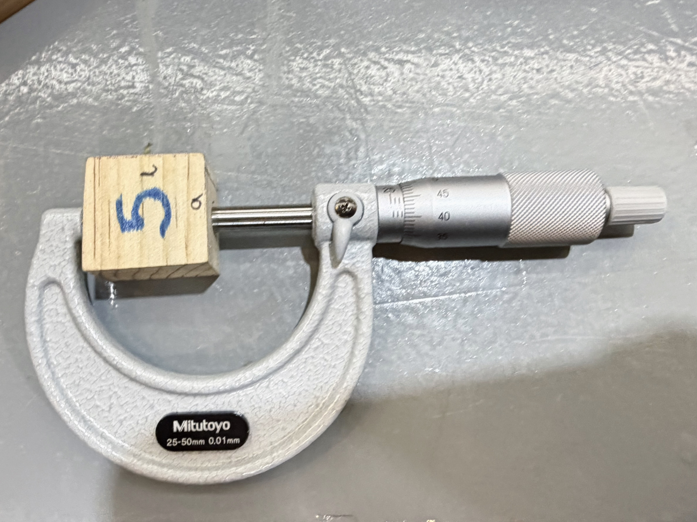

Máquinas del IDIT (actividad Vernier)
25 de Septiembre
En esta clase aprendimos a utilizar algunas máquinas manuales del IDIT, además de el uso del micrómetro y vernier
Instrumentos de medición
Para utilizarlo se recomienda:
1. Limpiar el instrumento antes de medir
2. Verificar que marque cero al estar cerrado
3. No ejercer presión al medir
-
Vernier: Nos permite conocer dimensiones con mayor precisión, este material nos ayuda a medir longuitudes en diámetros exteriores e interiores, profunididades de agujeros
-
Micrómetro: Utiliza un mecanismo de tornillo para medir dimensiones pequelas con mayor exactitud; sirve para medir espesores de materiales.
Broca y Fresa
- Broca: Tiene una punta puntiaguda que sirve para hacer perforaciones. Tiene filo en los lados por lo que corta circularmente hacia abajo (adentro)
- Fresa: Corta hacia los lados, sirve para esculpir; sirve para volumenes. Por lo general, se utiliza en materiales duros y avanza a la parte que se corta
Flauta: Son los dientes de la fresa/ (¿Cuántos filos tiene?)
Fresadora
- La manija de lado avanza en el eje X.
- La manija de enfrente avanza en el eje Y.
- La broca debe entrar menos del 50% en el material.
- El corte se realiza en el sentido de las manecillas del reloj.


Sierra cinta
- Colocar el material y sujetarlo con ambas manos.
- En el lado izquierdo se ajusta la posición.
- Sirve para cortas placas o cosas muy delgaditas.
- Hacer perfiles

Corta láminas
La máquina corta en diagonal

Doblar láminas
- Siempre se debe doblar más de lo que queremos, ya que el material se regresa.
- Al cortar el material se tensa y es dificil revertirlo.

Soldadura por 2 puntos

Práctica
| # de cubo | Vernier (mm) | Micrómetro (mm) |
|---|---|---|
| 2 | a= 36.3 l= 79.56 h= 28.38 |
a= 36.32 l= no se puede medir h=28.15 |
| 5 | a= 25.68 l= 28.21 h=23.18 |
a= 26.26 l= 28.43 h=no se puede medir |
| 6 | a= 32.33 l= 43.28 h= 28.20 |
a= 32.2 l= 43.30 h= 28.40 |
| 8 | a= 31.80 l= 45.27 h= 32.49 |
a= 32 l= 45.5 h=32.7 |
| 17 | a= 31.84 l= 41.38 h= 29.45 |
a= 32.4 l= 41.58 h=29.65 |
Entre los instrumentos de medición puede existir una diferencia mayor o menor a 1.5mm
